class: center, middle, title-slide count: false ## <b>Learning PageRank</b><br/><sub>Application of Graph Neural Networks</sub> ### Presented by Q. Le Roux (github@qlero) <br/> .less-line-height[ .grey[Université Côte d'Azur] ] --- # Overview This presentation covers the following project: .font80[ - Creating random graphs using 2 methods - Reproducing the PageRank algorithm - Computing the graph nodes' respective PageRank - Constructing Graph Neural Networks using 2 methods - Predicting PageRank - Discussion of the results ] --- class: center, middle, title-slide # 🌐 Generating Random Graphs --- # Selected Methods .font70[ To generate random graphs, we rely on 2 methods: - Erdös-Rényi, or binomial graphs: *given a graph with n nodes, each possible edge is kept with a probability p, generating a G_{n,p} graph* - Scale-Free graphs: *network whose degree distribution follows a power law* ] <br> .font70[**methods:** we use the methods from the Python library `networkx`: - `erdos_renyi_graph` - `scale_free_graph`] --- # Example Graphs <center>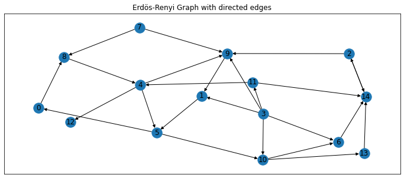</center> <center>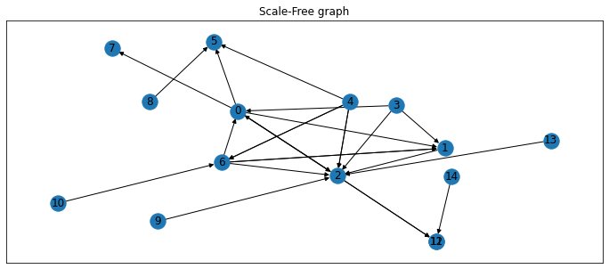</center> --- class: center, middle, title-slide # 🧮 PageRank --- .font80[PageRank is a **link analysis algorithm that computes the numerical weight of a node in a graph**, given the number of incoming edges. It is notably used to compute web pages' weight (as done at Google) given the hyperlinks and references linked to it.] <br> .font50[**Source**: `Page, L. et al. The PageRank Citation Ranking: Bringing Order to the Web. Stanford InfoLab. (1999)`] --- # The Algorithm .font60[Given a graph *G* with *n* nodes and *e* directed edges (with no self-references), each node *i* PR value initialized with a uniform r.v., all summing to 1. A node *i* transfers its PR value in equal amount between all nodes *j* it refers to. Such amount granted from a node *i* to a node *j* can be written as:] <center>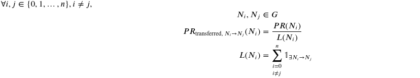</center> .font60[ Given *M* the set of nodes *j* linking to a node *i*, and *d* a damping factor: ] <center>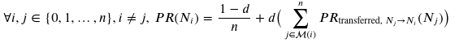</center> --- # Example Approach: Iterative (1/2) .font60[ We chose to implement the iterative approach of PageRank: - Each of the *n* nodes initialized with PR=1/n - *d* = 0.85 (default value) - *e* a convergence threshold parameter - *R* the column vector which rows are the PR values of each node *i* For *t* timestep, each node *i* is updated as such: ] <center>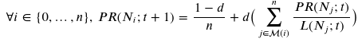</center> .font60[ The process stops when: ] <center>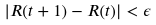</center> --- # Example Approach: Iterative (2/2) .font60[ *Applying a hand-made algorithm is slow and has issues with sparse matrices.* <center>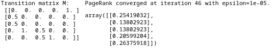</center> *We default to the `networkx` implementation, which also applies the iteration method. We yield the given example:* <center>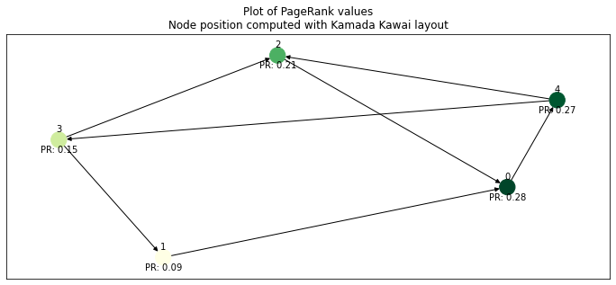</center> ] --- # Applying the Algorithm .font50[ <center>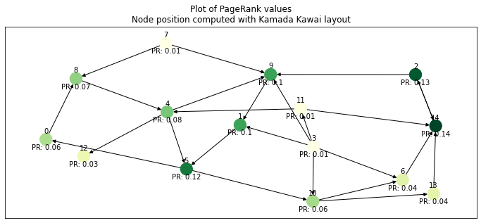</center> <center>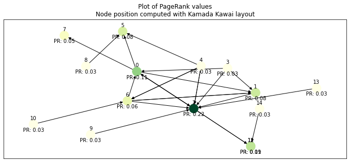</center> ] --- class: center, middle, title-slide # 🗄️ Predicting PageRank: Approach --- # Problem Statement <br> <br> This is a **regression problem**. .font70[We want to predict a continuous value for each node based on the connections from other nodes to it.] --- # Generating Random Graphs .font60[ To test various GNN, we implement three graphs: - **Graph 1, (n=30, e≈60)**: graph composed of 2 graphs of 15 nodes totaling (resp. generated with Erdös-Rényi with p=0.2, and Scale-Free methods). - **Graph 2, (n=510, e≈2400)**: graph composed of 9 Erdös-Rényi graphs (all permutations of (n,p) s.t. n={5, 30, 50}, p={0.1, 0.2, 0.3}) and 3 Scale-Free graphs with resp. 5, 30, and 50 nodes. - **Graph 3, (n=2500, e≈1.5m)**: Tries to reimplement the graph from "The Graph Neural Network Model" paper (2500 nodes instead of 5000 with delta=0.2) <br> Graph nodes were implemented with either a noise scalar as feature or a zero-valued n-vector except at the index of the node (1). Train/Val/Test split: 70/15/15 ] --- # GNN Model 1: With Relaxation (1/2) .font60[ **Based on a diffusion mechanism**, it processes a graph as a set of nodes linked together according to a list of edges until equilibrium. Learns: - *f* and *g*, the local transition and output functions. They resp. describe the diffusion process and dependences of a state of a node *n*, and the graph output for the node *n*. <center>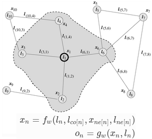</center> ] .font50[**Source:** Scarselli, F., Gori, M. et al. `The Graph Neural Network Model`. (2009);] --- # GNN Model 1: With Relaxation (2/3) .font70[ **Implementation**: - We adapt the GNNWrapper object available in the `torch_gnn` library (see `scripts/regression_gnn_wrapper.py`) - Criterion: **MSELoss** - Optimizer: testing **Adam**, **AdamW**, **Adamax**, **Adadelta**, **SGD** on *Graph 1* - <u>Hyperparameters:</u> epochs **1000**, state transition, output function hidden dims **5**, state dimensions **5**, convergence threshold **0.01**, maximum iterations **50**, learning rate **0.001** ] .font50[**Source:** Tiezzi, M., et al. `A Lagrangian Approach to Information Propagation in Graph Neural Networks`. ECAI2020. (2020)] --- # GNN Model 1: With Relaxation (3/3) <br> <center>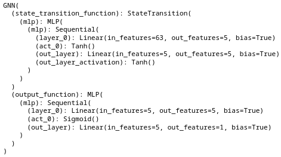</center> --- # GNN Model 2: GCN (1/3) .font60[We will test two approaches: - **GCN**: Model based on fast approximate convolution on graph. <center>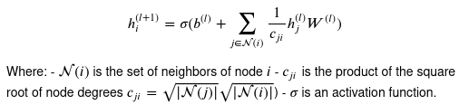</center> - **SAGE**: Model based on the aggregation of information from local neighborhood, e.g., degrees. Each iteration performs neighborhood information aggregation updates (scales for graphs with >100,000 nodes) <center>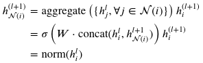</center> ] .font50[**Sources**: Kipf, T.N., et al. `Semi-supervised classificaion with GNN`. ICLR. (2017); Hamilton W. et al. `Inductive Representation Learning on Large Graphs` (2017)] --- # GNN Model 2: GCN (2/3) .font70[ **Implementation**: - We adapt the methods available in the `DGL` library (see `scripts/graph_networks.py`) - Criterion: **MSELoss** - Optimizer: testing **Adam**, **AdamW**, **Adamax**, **Adadelta**, **SGD** on *Graph 1* - <u>Hyperparameters:</u> epochs **1000**, hidden dimensions **5**, learning rate **0.005** (papers used 0.01) - Early stopping implemented if the validation loss does not decrease after 10 epochs ] .font50[**Source:** Wang, M. et al. `Deep Graph Library: A Graph-Centric, Highly-Performant Package for Graph Neural Networks` (2019)] --- # GNN Model 2: GCN (3/3) <br> <center>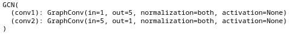</center> <br> <center>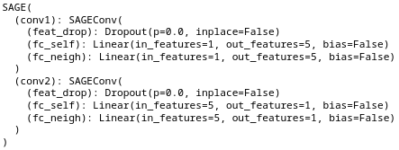</center> --- class: center, middle, title-slide # 🧱 Results --- # Results (1/7) .font40[ <u>Graph Neural Networks with Relaxation</u> | Optimizer | End Training Loss | End Validation Loss | Comment | | --- | --- | --- | --- | | Adam | 0.0 | 0.0031 | **OK**, results close to ground truth | | AdamW | 0.0 | 0.0059 | *NOK*, nodes 1, 2 negative predictions | | Adamax | 0.0002 | 0.0047 | *NOK*, node 1 negative prediction | | Adadelta | 0.0083 | 0.0078 | *NOK*, overpredicts nodes 1 to 29, underpredicts 30 | | SGD | 0.0039 | 0.0013 | *NOK*, underpredicts nodes 26 to 30 | ] <br> <center>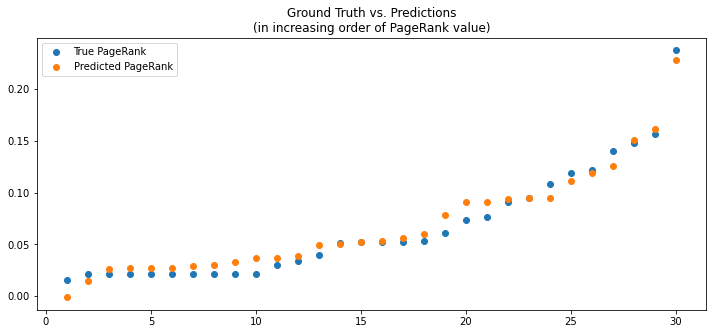</center> --- # Results (2/7) <center>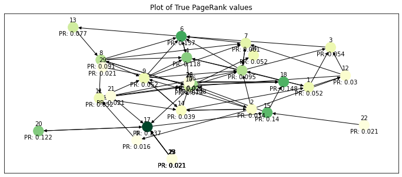</center> <center>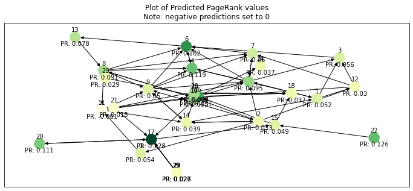</center> --- # Results (3/7) .font40[ <u>Graph Convolutional Neural Networks</u> | Feature type | Optimizer | End Training Loss | End Validation Loss | Comment | | --- | --- | --- | --- | --- | | Noise | Adam | 0.0014 | 0.0006 | *NOK*, mix of over/under predictions | | Noise | AdamW | 0.0017 | 0.0003 | *NOK*, mix of over/under predictions | | Noise | Adamax | 0.001 | 0.0003 | *NOK*, mix of over/under predictions | | Noise | Adadelta | 0.0053 | 0.0025 | *NOK*, prediction range between 0.0 and 0.05 | | Noise | SGD | 0.0008 | 0.0002 | *NOK*, mix of over/under predictions | | Torch Eye | Adam | 0.0 | 0.0001 | **OK**, results close to ground truth | | Torch Eye | AdamW | 0.0008 | 0.0012 | *NOK*, underpredicts nodes 23 to 28 | | Torch Eye | Adamax | 0.001 | 0.0008 | *NOK*, underpredicts node 30 | | Torch Eye | Adadelta | 0.0048 | 0.0006 | *NOK*, overpredicts nodes 14 to 30 | | Torch Eye | SGD | 0.0008 | 0.0005 | *NOK*, underpredicts node 30 | ] <center>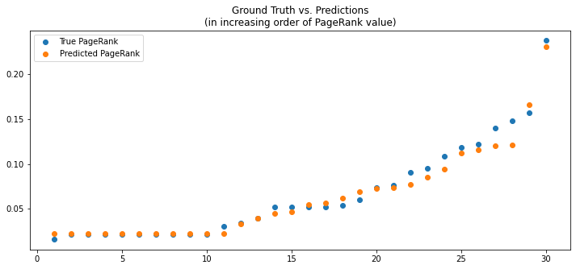</center> --- # Results (4/7) <center><img src="images/graph101.png" width="600"></center> <center>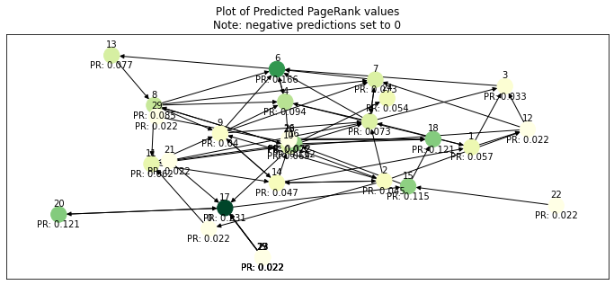</center> --- # Results (5/7) .font40[ <u>SAGE Graph Neural Networks</u> | Feature type | Optimizer | End Training Loss | End Validation Loss | Comment | | --- | --- | --- | --- | --- | | Noise | Adam | 0.0216 | 0.0109 | *NOK*, overpredicts nodes 21 to 30 | | Noise | AdamW | 0.0031 | 0.0011 | *NOK*, mix of over/under predictions | | Noise | Adamax | 0.0015 | 0.0046 | *NOK*, overpredicts nodes 26 to 30 | | Noise | Adadelta | 0.0372 | 0.0618 | *NOK*, mix of over/underpredictions | | Noise | SGD | 0.0102 | 0.0157 | *NOK*, overpredicts nodes 24 to 30 | | Torch Eye | Adam | 0.0 | 0.0145 | *NOK*, overpredicts nodes 25 to 30 | | Torch Eye | AdamW | 0.0 | 0.0189 | *NOK*, overpredicts nodes 23 to 30 | | Torch Eye | Adamax | 0.0555 | 0.049 | *NOK*, mix of over/under predictions | | Torch Eye | Adadelta | 0.2395 | 0.1058 | *NOK*, mix of over/under predictions | | Torch Eye | SGD | 0.016 | 0.002 | *NOK*, mix of over/under predictions | ] <center>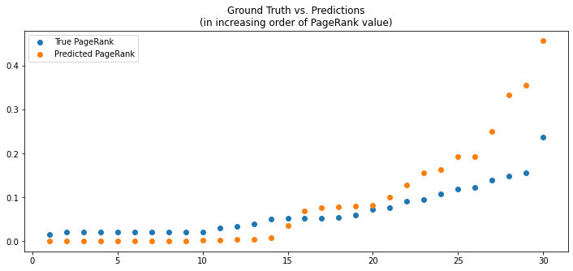</center> --- # Results - Graph 2 (6/7) .font40[ <u>Graph Neural Networks with Relaxation</u> | Optimizer | End Training Loss | End Validation Loss | Comment | | --- | --- | --- | --- | | Adam | NA | NA | ***Memory overflow*** | <u>Graph Convolutional Neural Networks</u> | Feature type | Optimizer | End Training Loss | End Validation Loss | Comment | | --- | --- | --- | --- | --- | | Noise | Adam | 0.0014 | 0.0006 | *NOK*, mix of over/under predictions | | Torch Eye | Adam | 0.0 | 0.0001 | **OK**, results look close to ground truth | ] <br> <center>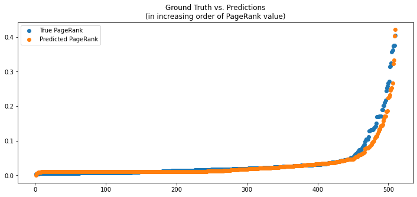</center> --- # Results - Graph 3 (7/7) .font40[ <u>Graph Neural Networks with Relaxation</u> | Optimizer | End Training Loss | End Validation Loss | Comment | | --- | --- | --- | --- | | Adam | NA | NA | ***Memory overflow*** | <u>Graph Convolutional Neural Networks</u> | Feature type | Optimizer | End Training Loss | End Validation Loss | Comment | | --- | --- | --- | --- | --- | | Torch Eye | Adam | 0.0 | 0.0 | **NOK**, PR values too small to be captured (equivalent to noise?) | ] <br> <center>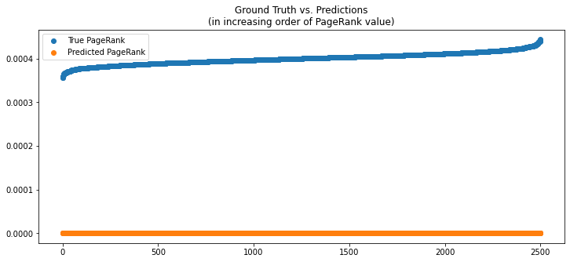</center> --- # Comments .font60[ - Results seem dependent on the train/validation/test split (especially for *Graph 1* due to low number of nodes): - Model selection not possible on validation loss alone (visual check) - Implementing a **cross-validation** process would help - Some implementations output negative values for the smallest nodes: - **clipping** or **output layer activation** to be explored - **Memory overflow** when using the `torch_gnn` with node number > 100, edge number > 1,000 ] --- # Code Availability <br> <br> Code, presentation, notebooks will be available tonight or tomorrow here: > https://github.com/qlero/page_rank_GNN --- class: center, middle, title-slide # 🤩 It's been a pleasure ## Ask me questions!